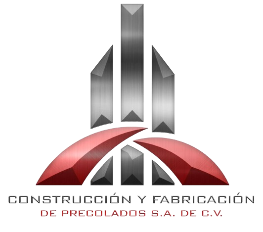

Construcción y Fabricación de Precolados SA de CV
Nuestro objetivo es promover un ambiente de trabajo inclusivo y equitativo, donde se valore y respete la diversidad de perspectivas y habilidades de nuestros empleados. Nos comprometemos a crear una cultura empresarial que celebre la diversidad en todas sus formas, incluyendo, pero no limitándose a la edad, género, origen étnico, orientación sexual, identidad de género, religión, discapacidad y antecedentes socioeconómicos.
Nos esforzamos por fomentar un entorno donde cada empleado se sienta valorado y respetado para contribuir con su máximo potencial al éxito de la empresa. Esto incluye implementar prácticas de contratación justas y equitativas, promover oportunidades de desarrollo y progreso profesional para todos los empleados, y garantizar un trato justo y digno en todas las interacciones laborales. Además, nos comprometemos a eliminar cualquier forma de discriminación, acoso o exclusión en el lugar de trabajo, y a crear políticas y procedimientos claros para abordar cualquier problema relacionado.
Ámbito de aplicación:
La presente política es de aplicación a Construcción y Fabricación de Precolados S.A. de C.V. que se extiende a todas las personas e instancias relacionadas con la organización, tanto internas como externas, y tiene como objetivo promover una cultura de respeto, igualdad y aceptación de la diversidad en todas las áreas de la actividad empresarial.
Volver a inicio